La constante de Kepler : Un pas plus loin
A l'occasion d'une séance de TPL qui leurs étaient dédiées, vous avez découvert par vous-même les trois lois de Kepler permettant de décrire la cinématique des corps gravitant autour du Soleil.
-
La trajectoire d'un corps en orbite autour du Soleil est une ellipse dont un des foyers est notre étoile.
En des durées égales, les aires décrites par le segment corps-Soleil sont identiques.
Le rapport du demi-grand axe de l'ellispe au cube et de la période de révolution au carré est une constante.
Le rapport du demi-grand axe de l'ellispe au cube et de la période de révolution au carré est une constante.
Nous avons vu que si les distances sont exprimées en unités astronomiques ( 150 millions de km) et les périodes en années, cette constante est égale à 1 autour du Soleil.
En rélaité, si nous utilisons les unités S.I, cette constante sera différente de 1. Mais de quoi dépend-elle ? Pour vous aiguiller, je vous conseille de comparer deux systèmes : le système solaire et le système jovien.

Je vous invite donc à calcuer la valeur de cette constante pour 4 planètes tournant autour du Soleil.
Vous effectuerez la même tâche pour les 4 lunes principales de Jupiter connues également sous le nom de satellites galiléens
. Vous trouverez les données nécessaires sur le web. Ouvrez un nouvel onglet et effectuez des recherches. La wikipédia s'avère être un précieux allié dans ce domaine !
- Europe
- Io
- Callisto
- Ganymède

Vous pouvez utiliser le tableau à la page suivante pour récolter vos données. N'oubliez pas de convertir vos données en unités SI.
La notation scientifique est accessible en tapant 5*10^3
au lieu de 5000.
Signalons que vous pouvez faire calcuer la constante au tableur. Pour la Terre, vous pourrez taper dans la cellule : = B3^3/C3^3
.